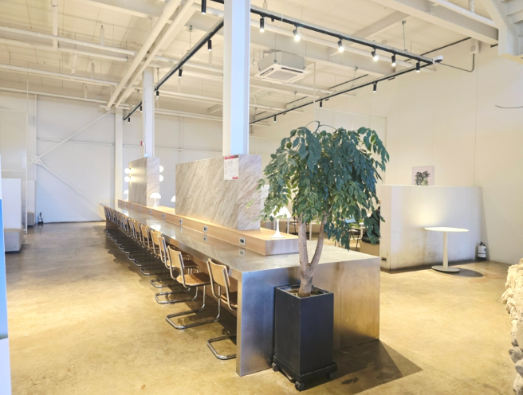
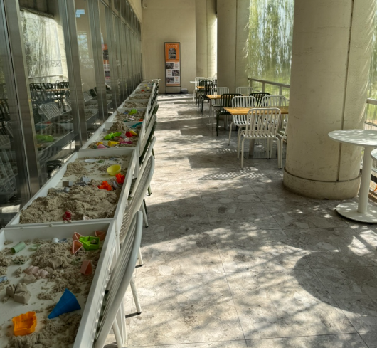
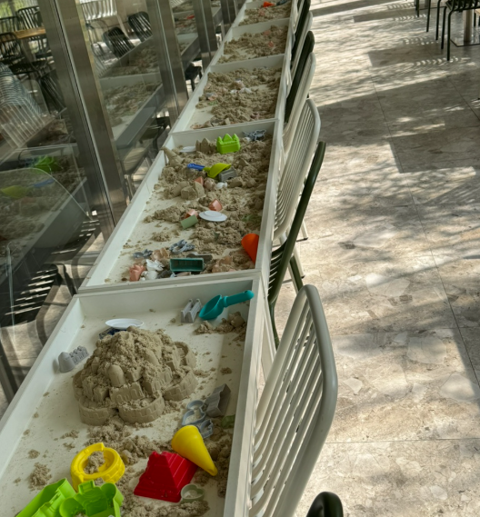

ABOUT MARGAUX
자연과 함께하는 편안하고 여유로운 공간
마고의 공간을 만나보세요
숲속에서 만나는 여유
자연과 어우러진 마고의 특별한 공간을 만나보세요.

탁 트인 카페 전경
넉넉한 공간과 다양한 좌석
가족, 친구들과 함께 머물 수 있는 공간

나만의 집중 시간
혼자서도 조용하고 편안하게
공부와 독서에 집중할 수 있는 카공존
아이들에게도 즐거운 시간
아이들이 즐길 수 있는 모래놀이 공간

